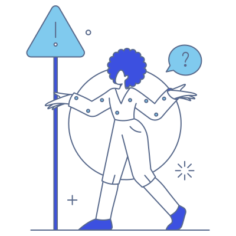

404

با عرض پوزش، صفحه یافت نشد
به نظر می رسد صفحه ای که به دنبال آن بودید منتقل شده، حذف شده یا وجود ندارد.
برگشت به صفحه ی اصلیبه نظر می رسد صفحه ای که به دنبال آن بودید منتقل شده، حذف شده یا وجود ندارد.
برگشت به صفحه ی اصلی